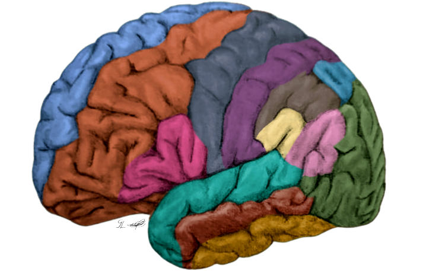
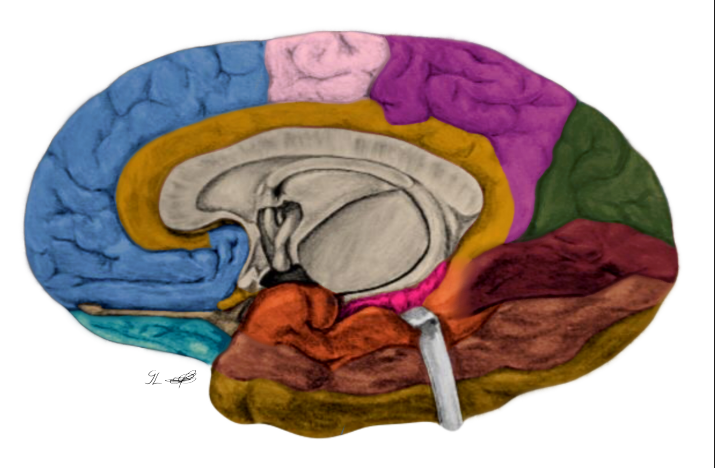
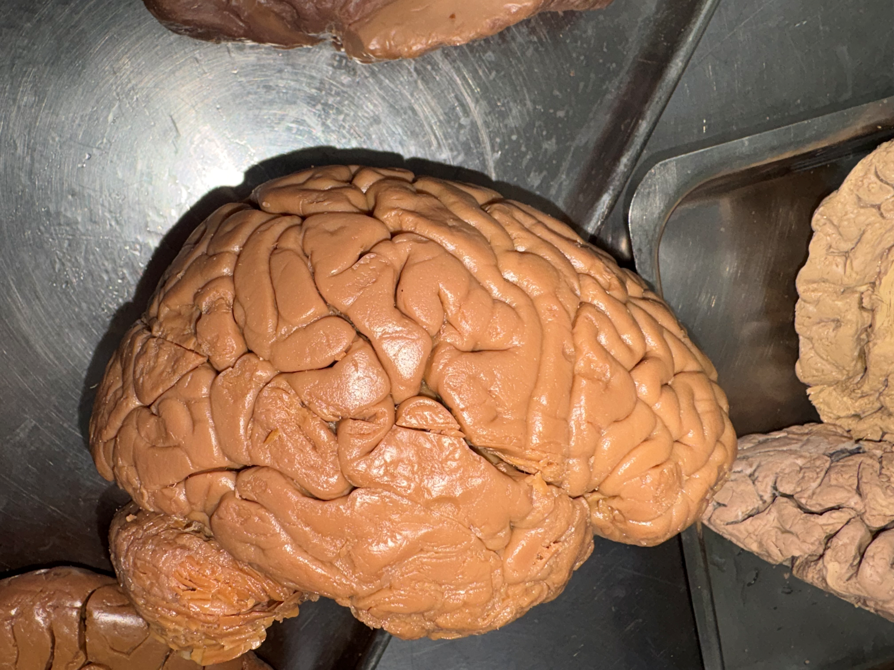

Atlas Interativo
Escolha um mapa

Telencéfalo — Vista Lateral

Telencéfalo — Vista Medial

Sulcos Telencéfalo — Vista Lateral
← Voltar ao menu principal
Carregando mapa...
Clique em uma estrutura para identificá-la.
Estrutura selecionada:
Nenhuma
← Escolher outro mapa
🏠 Menu principal